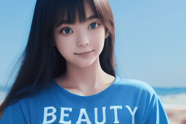
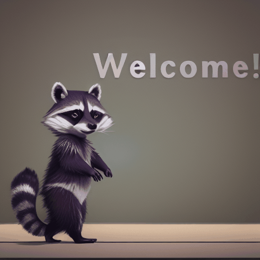
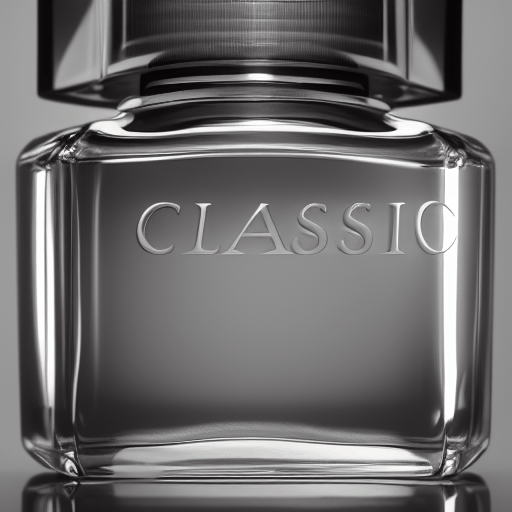
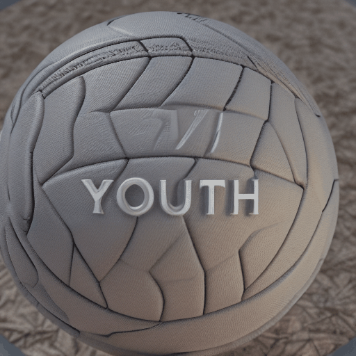
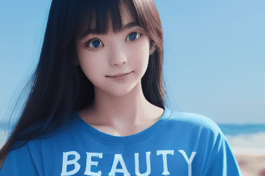
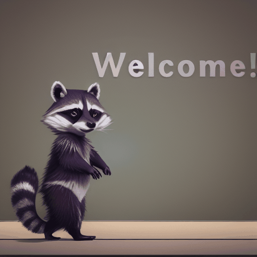
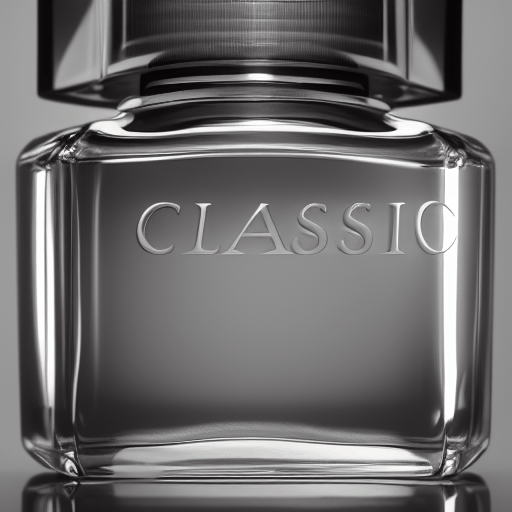
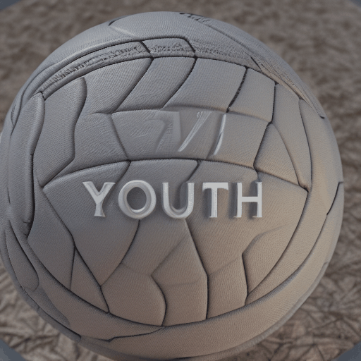
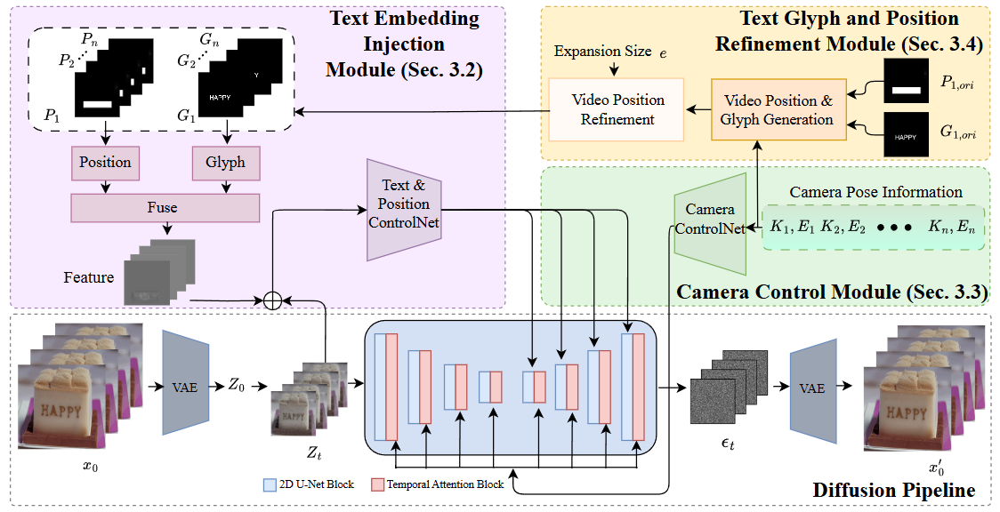

Text-Animator: Controllable Visual Text Video Generation
 







Text-to-video (T2V) generation is a challenging yet pivotal task in various industries, such as gaming, e-commerce, and advertising. One significant unresolved aspect within T2V is the effective visualization of text within generated videos. Despite the progress achieved in T2V generation, current methods still cannot effectively visualize texts in videos directly, as they mainly focus on summarizing semantic scene information, understanding and depicting actions. While recent advances in text-to-image (T2I) visual text generation show promise, transitioning these techniques into the video domain faces problems, notably in preserving textual fidelity and motion coherence. In this paper, we propose an innovative approach termed Text-Animator for text to video visual text generation. Text-Animator contains text embedding injection module to precisely depict the structures of visual text in generated videos. Besides, we develop a camera control module and a text refinement module to improve the stability of generated visual text by controlling the camera movement as well as the motion of visualized text. Quantitative and qualitative experimental results demonstrate the superiority of our approach on the accuracy of generated visual text over state-of-the-art video generation methods.
Framework of Text-Animator. Given a pre-trained T2V 3D-UNet, the camera controlnet takes camera embedding as input and
outputs camera representations; the text and position controlnet takes the combination feature as input and outputs position representations These features are then integrated into the 2D Conv layers and temporal attention layers of 3D-UNet at their respective scales.

Qualitative comparison of Text-Animator and others on one example of the LAION-subset dataset. The prompt is ‘Two bags with the word ’CHRISTMAS’ designed on it’. Other methods cannot generate the correct word.
Gen2
Open-sora
Pika.art
Anytext+i2vgen-xl
Ours
speed=2
speed=8
speed=12
Our project page is borrowed from DreamBooth.